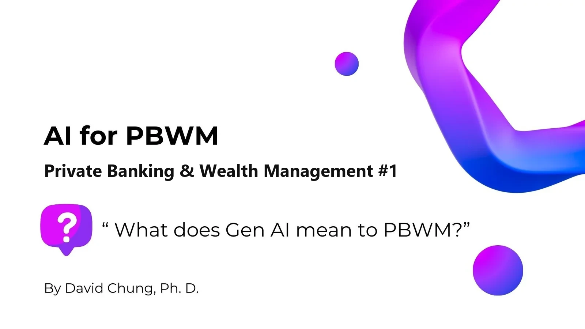
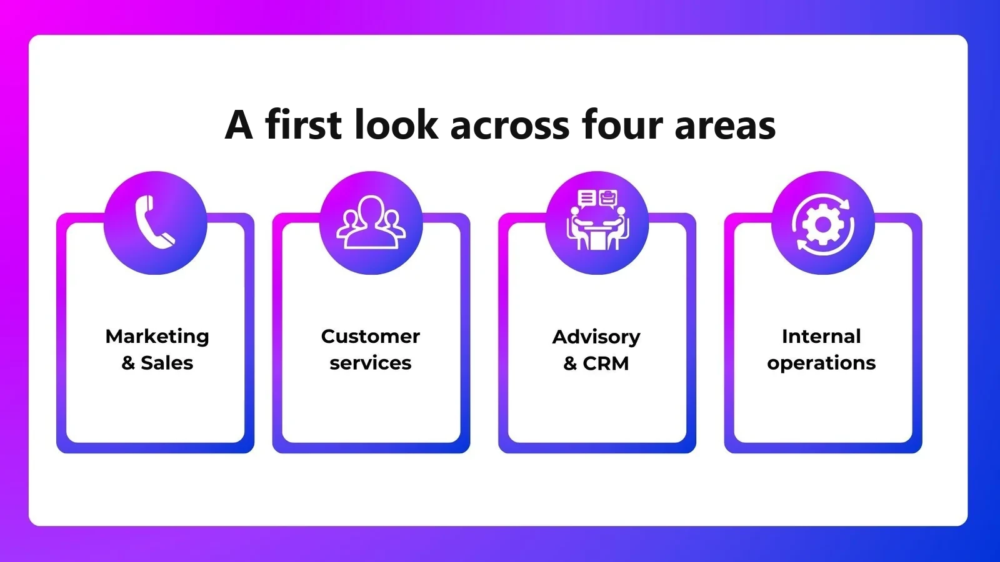
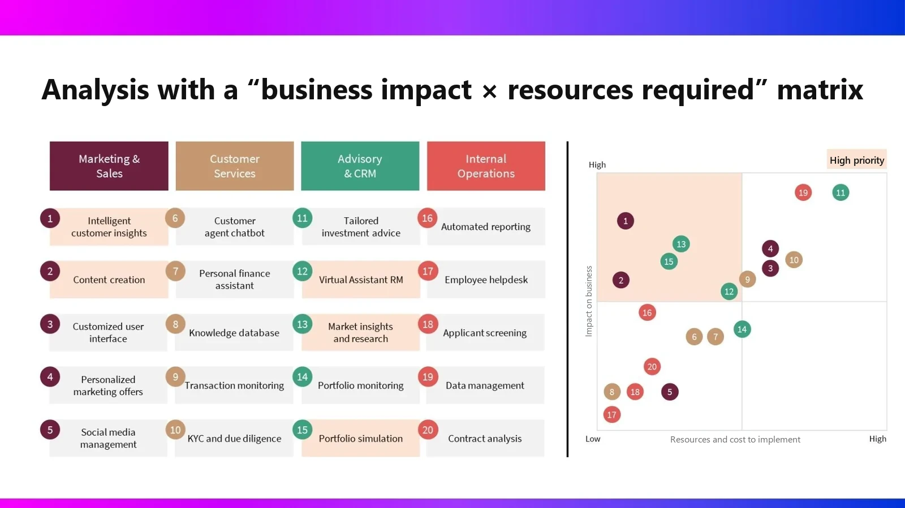
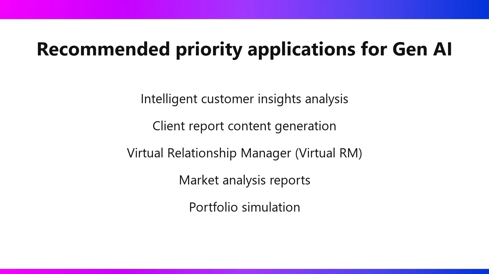

In this series, we look in depth at how artificial intelligence (AI) is transforming private banking and wealth management.
Introduction
Artificial intelligence (AI) is changing the financial industry fast. From improving the client experience to optimising internal operations, AI is being applied everywhere, and for financial services, integrating AI is redefining the standard of service. This short article focuses on how financial institutions can identify the “best” applications of generative AI in their private banking and wealth management business.
Taking stock of potential business applications
We can start the stocktake from four areas:
- Marketing and sales
- Customer service
- Investment advisory and client relationship management
- Internal operations
In this article, we go one step further and propose, for each of these four areas, the five business activities where AI can be applied most.
Setting priorities
We used a “business impact × resources required” matrix, which defines four quadrants, discussed the applications identified in the previous step, and placed each of them in one of the quadrants. We then took the applications in the “high business impact, fewer resources required” quadrant (the top left), which gave us these five high-priority applications as a first result:
1. Intelligent customer insights analysis: Generative AI provides insights into trends, sentiment and emerging needs by analysing external data such as social media and past interactions, helping financial institutions understand their customers more accurately.
2. Client report content generation: Generative AI can automatically collect and synthesise data from multiple sources to generate weekly, monthly and other client reports, greatly reducing manual effort.
3. Virtual Relationship Manager (Virtual RM): Generative AI supports RMs in client interactions, for example by recording meeting notes, scheduling follow-ups and suggesting how to engage, improving efficiency and service quality.
4. Market analysis reports: Generative AI processes and analyses large volumes of market data to produce real-time market insights and analysis reports that support investment decisions.
5. Portfolio simulation: Generative AI uses real-time market data and research to simulate different investment strategies and their potential outcomes, helping investors make better-informed decisions.
Summary
As financial institutions bring in AI and Gen AI, they can use the method above to identify the applications to develop first, as one of the key steps in an organisation’s “AI development strategy roadmap”.